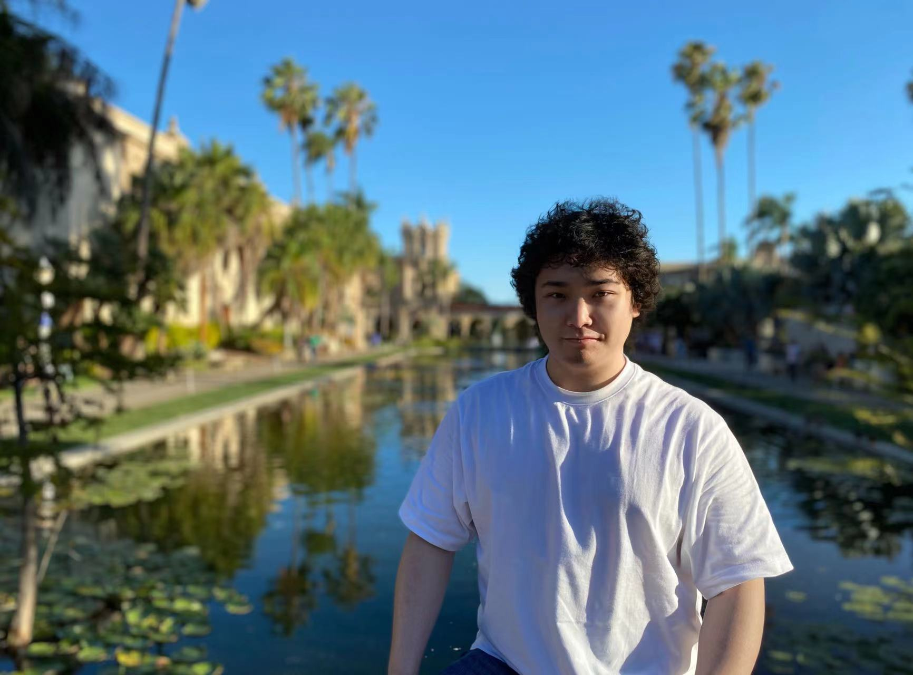

Ph.D.
Department of Electrical & Computer Engineering (ECE)
Cornell University
Membership:ACM, IEEE, AAAI, MICCAI, ISMRM member
Email: hz459[at]cornell.edu / miruku.hzhang[at]gmail.com
Google Scholar / Github / 知乎 / IG / Twitter
Biography
Hang Zhang received his PhD from the Department of Electrical & Computer Engineering at Cornell University.
Prior to this, he earned his MPhil from the Department of Computer Science & Engineering at The Chinese University of Hong Kong.
His academic journey began with a BEng degree, obtained from Sichuan University (SCU).
Hang's research in medical image computing was acknowledged with a Best Paper Award nomination at the IEEE International Symposium on Biomedical Imaging (ISBI'2021).
In addition, his work in Computer-aided Design (CAD) has been honored with a Best Paper Award (Cornell ECE Post) from the 26th IEEE International Symposium on Field-Programmable Custom Computing Machines (FCCM'2018) and a Best Paper Award (CUHK CSE Post) from the ACM International Symposium on Physical Design 2017 (ISPD'2017).
Currently, Hang's research is focused on machine learning and deep learning algorithms and theories, with a particular emphasis on their practical applications in medical image analysis. He is dedicated to building Ultrahand, a primitive neuralized tool that aims to bridge the gap between human and machine intelligence, improving clinical translation with complex neural networks.
Recent Updates
Preprints
-
[P] Multi-echo Complex Quantitative Susceptibility Mapping and Quantitative Blood Oxygen Level Dependent Magnitude (mcQSM+qBOLD or mcQQ) for Oxygen Extraction Fraction (OEF) Mapping ,
Junghun Cho, Jinwei Zhang, Pascal Spincemaille, Hang Zhang, Thanh D. Nguyen, Shun Zhang, Ajay Gupta, and Yi Wang
Magnetic Resonance in Medicine (MRM), 2023. (Submitted)
[pdf]
-
[P] RimSet: Quantitatively Identifying and Interpreting Chronic Active Multiple Sclerosis Lesion on Quantitative Susceptibility Maps ,
Hang Zhang, Thanh D. Nguyen, Jinwei Zhang, Renjiu Hu, Susan A. Gauthier, and Yi Wang
arXiv Preprint, 2023.
[pdf]
-
[P] DAGrid: Directed Accumulator Grid,
Hang Zhang, Renjiu Hu, Xiang Chen, Rongguang Wang, Jinwei Zhang, Jiahao Li
arXiv Preprint, 2023.
[pdf][code]
-
[P] Physics-based Network Fine-tuning for Robust Quantitative Susceptibility Mapping from High-pass Filtered Phase,
Jinwei Zhang, Alexey Dimov, Chao Li, Hang Zhang, Thanh D. Nguyen, Pascal Spincemaille, Yi Wang
Magnetic Resonance in Medicine (MRM), 2023. (Submitted)
[pdf]
-
[P] Deep Learning Improved Autofocus for Motion Artifact Reduction and its Application in Quantitative Susceptibility Mapping,
Chao Li, Jinwei Zhang, Hang Zhang, Jiahao Li, Pascal Spincemaille, Thanh D. Nguyen, Yi Wang
Magnetic Resonance in Medicine (MRM), 2023. (Submitted)
[pdf]
Publications
-
[J] mcLARO: Multi-Contrast Learned Acquisition and Reconstruction Optimization for Simultaneous Quantitative Multi-parametric Mapping,
Jinwei Zhang, Thanh D. Nguyen, Eddy Solomon, Chao Li, Qihao Zhang, Jiahao Li, Hang Zhang, Pascal Spincemaille, Yi Wang
Magnetic Resonance in Medicine (MRM), 2023.
[pdf]
-
[C] DeDA: Deep Directed Accumulator,
Hang Zhang, Rongguang Wang, Renjiu Hu, Jinwei Zhang, Jiahao Li
International Conference on Medical Image Computing and Computer Assisted Intervention (MICCAI), Vancouver, Canada, Oct. 8-12, 2023. (Early Accept)
[pdf][code]
-
[C] Spatially Covariant Lesion Segmentation,
Hang Zhang, Rongguang Wang, Jinwei Zhang, Dongdong Liu, Chao Li, Jiahao Li
The 31st International Joint Conference on Artificial Intelligence (IJCAI), Macao, S.A.R., August 19-25, 2023.
[pdf]
-
[J] LARO: Learned Acquisition and Reconstruction Optimization to accelerate Quantitative Susceptibility Mapping,
Jinwei Zhang, Pascal Spincemaille, Hang Zhang, Thanh D. Nguyen, Chao Li, Jiahao Li, Ilhami Kovanlikaya, Mert R. Sabuncu, and Yi Wang
NeuroImage, 2023.
[pdf]
Selected Honors & Awards
Best Paper Award Finalist at
ISBI' 2021.
HP Fellowship at Cornell University, 2018.
Best Short Paper Award at
FCCM' 2018.
Merit-based Graduate School Fellowship at Cornell University, 2017.
Best Paper Award at
ISPD' 2017.
Second Place Award in CAD contest at
ISPD,
held by Xilinx, 2016.
The Championship Award of CAD Contest at
ICCAD, held by Stanford & IBM, 2015.
Full Postgraduate Studentship at CUHK, 2015-2017.
Excellent Bachelor Thesis Award at SCU (Top 1%), 2015.
Silver Medal at ACM-ICPC Asia Regional Chengdu Invitation Contest, 2013.
Talents Project at Wu Yuzhang Honors College of SCU (Top 0.1%), 2013-2015.
Services
Teaching/Grading
TA 2015-2016 fall CUHK ENGG
2440A Discrete Mathematics for
Engineers
Instructor: Bogdanov
Andrej
Grader 2018-2019 fall Cornell ECE
2720 Data Science for Engineers
Instructor: Aaron Wagner
Reviewer / Program Committee
International Joint Conference on Artificial Intelligence (IJCAI) 2023
Advances in Neural Information Processing Systems (NeurIPS) 2022
International Conference on Machine Learning (ICML) 2022
European Conference on Machine Learning and Principles and Practice of Knowledge Discovery in Databases (ECML-PKDD) 2022
International Conference on Medical Imaging with Deep Learning (MIDL) 2021, 2022, 2023
IEEE Winter Conference on Applications of Computer Vision (WACV) 2021, 2022, 2023, 2024
International Conference on Medical Image Computing and Computer Assisted Intervention (MICCAI) 2020, 2021, 2022, 2023
IEEE Transactions on Computer-Aided Design of Integrated Circuits and Systems (TCAD)
IEEE Transactions on Circuits and Systems for Video Technology (TCSVT)
Journal of Magnetic Resonance Imaging (JMRI)